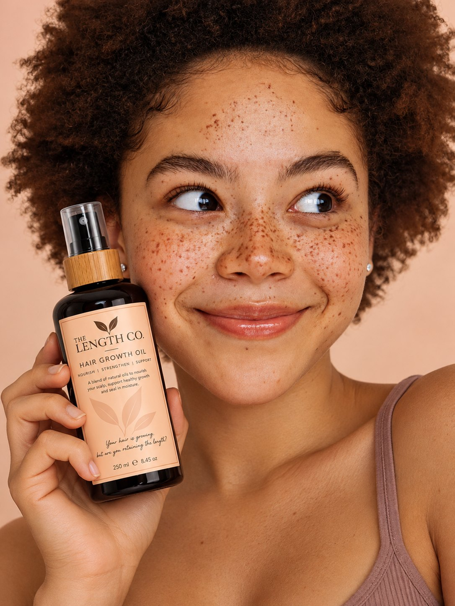

Visualé · Product PhotographyPink, playful, unmistakable.
I help haircare brands turn great products into visuals people stop for — from product photography and campaign imagery to social content that makes the brand feel memorable, desirable and ready to buy.
See the work ↓Haircare brands are competing in a feed full of beautiful products. A plain pack shot can tell people what you sell — but it doesn't always give them a reason to stop.
That's where I come in.
I build visual worlds around haircare products so your audience can see the product, imagine using it, remember the brand and feel the desire to learn more.
Concept-led product imagery created with AI — built around colour, texture, composition and the personality of the brand.


An imaginary haircare brand created as a full visual campaign concept — from product scenes to beauty portraits and campaign compositions.
The goal was to make the brand feel premium, warm and editorial while keeping the products clear and commercially useful. Every model in these visuals was created from scratch with AI; none of the models are real people.



Not just pretty images. Visual assets designed to give your brand more to post, more to test and more ways to tell the product story.
Studio, lifestyle and editorial product visuals created with AI from scratch.
A connected set of images that makes a launch or collection feel like a real campaign.
Creator-style and social-first content designed to feel native to the platforms your customers use.
Concepts, visual references, colour direction and storytelling that give the content a clear point of view.
AI is part of the production process — helping brands create high-quality visuals without needing a traditional shoot for every asset.
These visuals were created with AI from scratch. The products, compositions and fictional campaign worlds are designed intentionally around brand identity, audience and storytelling. The models do not exist as photographed people — they were created with AI from scratch.
Need scroll-stopping visuals for your next launch, campaign or content calendar?
Start a project ↗